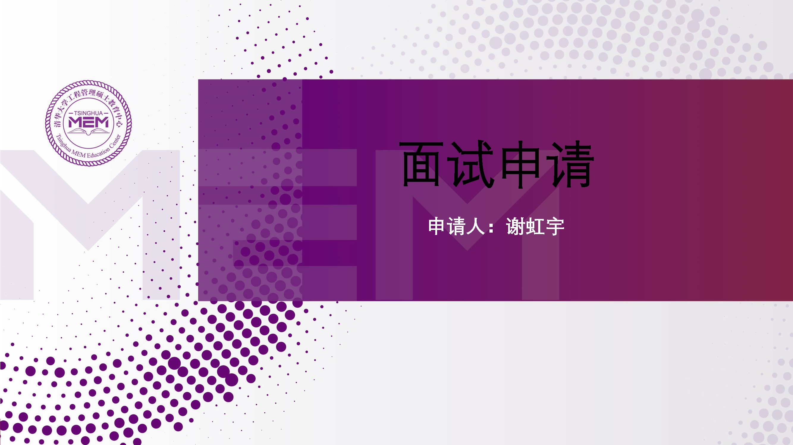
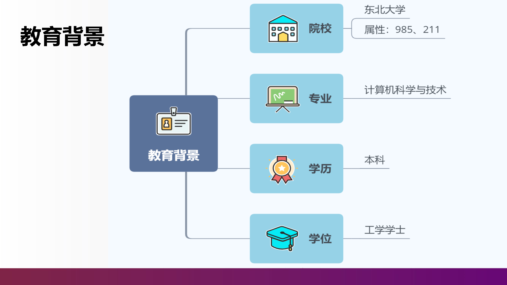
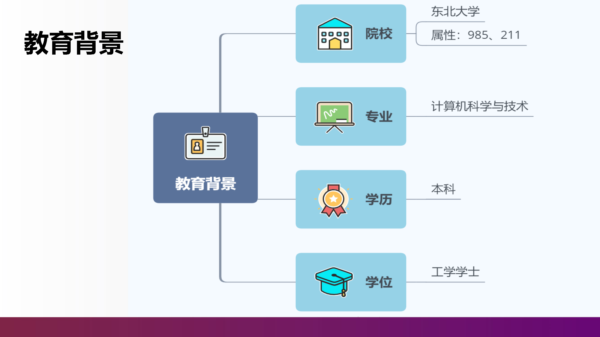
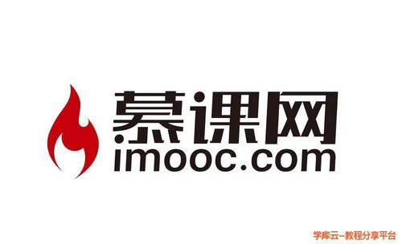
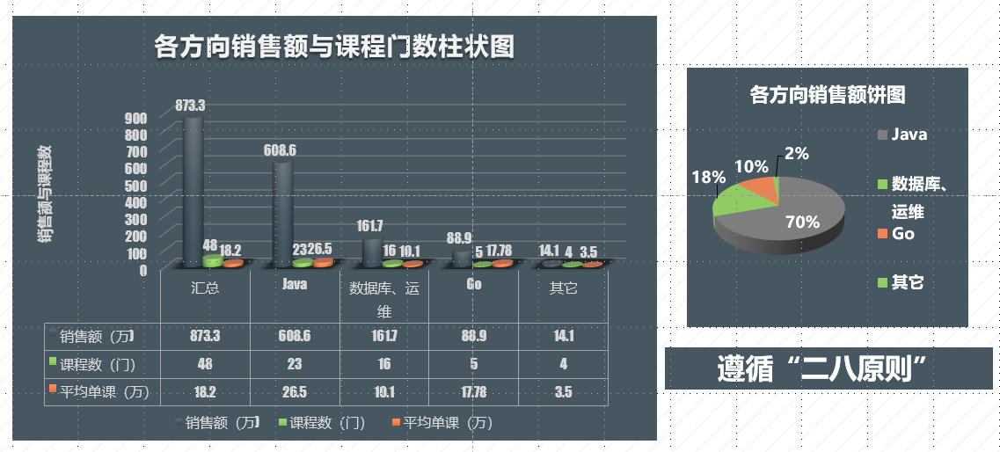
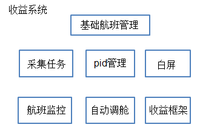

-
- Basic info. 基本信息
- 个人信息: 谢虹宇 / 女
- 毕业院校: 东北大学(2010-2014)
- 院校性质: 985、211(统招)
- 主修专业: 计算机科学与技术
- 业余爱好: 科幻电影,推理电影,Geek盛会,球类运动
- GitHub个人仓库: github.com/hongyuXie
- GitHub技术博客: hongyuxie.github.io/
- CSDN技术博客: blog.csdn.net/loverain90
-
- Snapshot. 个人工作快照
 



-
- Experience. 个人工作与项目详情
奥鹏教育集团-慕课网（2018.11 - 至今）
-
核心工作：项目经理（内容付费)
介绍： （0）内容团队核心成员：35+，按照项目管理的十大知识领域和五大过程组的纲领主导工作开展。 （1）设计与规划知识付费课程等产品或项目，方向涵盖：Java、大数据、数据库、GO等IT垂直内容方向。 （2）跨部门沟通协调（涉及与商务、产品、文案、研发等各部门），推进付费内容产品或项目以最低的风险，0故障上线，以及上线后续配合运营部门进行内容产品运营转化，做好用户服务。
主要负责：
（0）内容团队的：目标管理、流程化管理、有效管理、期望管理、沟通管理等方面。 （1）项目启动阶段：内容/项目产品创意的产生，进行市场调研，商业论证，确定付费内容是否符合技术市场需求，是否具有商业效益。 （2）项目规划阶段：商业论证通过后，与商务部门沟通发起人员需求，与内容创作团队（供应商）进行设计付费内容大纲，以及进度节点规划等。 （3）项目执行阶段：执行过程，主要是内容/项目的PPT、思维导图、代码等教辅资料落地，以及完成视频内容录制。 （4）项目监控阶段：运用项目管理工具管理和监控项目质量、进度、风险、成本等项目各维度监控。如：进度管理工具甘特图监控进度，运用《风险登记册》监控风险等。 （5）项目收尾阶段：与文案策划部门确定营销文案、与运营推广部门确定推广方案方案、与产品和研发部门沟通确保无故障上线，上线后与运营部门确保产品运营，确保用户服务质量。
-
成功项目一：
《剑指Java面试-Offer直通车》针对大学生群体如何在临近毕业，答辩紧张情况下，以及职场人士如何在996情况下，高效准备面试。
业绩：创造上线10日内实现15万+销售，成为经久不衰的年销售百万+的头部流量内容。 -
成功项目二：
《Go微服务网关设计与实战》针对小众中高端市场，设计以Go为主语言，微服务网关等底层技术为内容核心，以实战为向导的微服务网关设计与实现为主体的内容付费产品/项目。
业绩：创造小众方向三年来0一线内容的局面，开启Go语言方向新的篇章-成为《Go金职位体系课》发起人，在Go市场缺乏Go体系课情况下，成为第一个吃螃蟹的人。 -
项目集创新：
为了使上线已久的内容/项目产品，焕发新的销售活力，通过内容创新，进行内容迭代升级，实现新的增长。
业绩：实现环比增长+166.67%、同比增长+96%


 去哪儿网（2017.11 - 2018.11）
去哪儿网（2017.11 - 2018.11）-
机票-团票通各相关业务系统
介绍：团票通营销活动渠道购买的机票及保险，涉及search、booking、生单、支付、退款各流程涉及的三十多个业务子系统功能。
负责：1、完成保险信息的生单与订单详情查询部分；采用模板模式封装各个险种的生单流程，使得险种易于扩展， 使用工厂方法模式封装各个险种的生单Bean，业务层只需要持有工厂Bean的引用，根据险种类型获取具体的险种生单Bean；机票单生单 不保险单生单采用同步方式，机票单生单成功后再生保险单，保险单生单失败机票单按丌搭售保险逻辑正常走支付流程。 2、根据系统的监控，对原有search逻辑的维护、线上bug以及故障修复。
-
机票-收益相关业务系统
介绍：机票收益相关业务系统，根据内置的一些指令实时获取包机相关客座率等相关信息，进行自动的调舱，如：升舱、 降舱、补仓等，从而实现包机业务的最大收益。同时开发相关图表功能，直观查看收益相关信息，如客座率、日上客差值、竞比环比、收入等。


Java Web相关【开始】 启明星辰（2015.11 -2017.11）
启明星辰（2015.11 -2017.11）-
产品研发-日志采集系统
介绍：针对不同的应用通过授权，能够采用不同的采集方式， 同时，对已部署的系统，应该能够不断的添加新开发出来的采集方式， 因此插件模式也就应运而生。 在采集器(模块)中，每一种采集方式都被定义为一个插件， 这个插件在自己的代码控件中实现本身特有的采集功能， 并自己控制插件配置的保存和读取。
负责：各采集插件服务的研发工作，目前实现的主要的采集插件有:apache、iis、 jdbc(区分不同数据库类型，主要有oracle;sqlserver;mysql;db2等)、mysql、 oracle、mysql、textfile、textfilepath等。
技术栈：quartz框架，实时多线程任务调度；nutz框架


-
产品研发-日志审计系统
介绍：系统总13个一级模块，若干二三级模块。系统能实时采集企业和组织中各种不同厂商的安全设备、 网络设备、主机、操作系统、以及各种应用系统产生的日志、事件、报警等信息，并将数据信息汇集到审计中心，进行集中存储、 展现、查询和审计。产品解决安全行业中：各种安全产品及设备的日志数据通常杂乱无序，同时也无法体现它们之间的相互关系。 因此日志审计系统就是为解决这些问题建立起一个信息交换、信息存储、信息处理的平台，通过该平台，可以对各类产品的日志、 事件进行统一管理、分析。
负责：目前主要是规则、审计、告警三个一级模块

谢虹宇的简历
(゜-゜)つロ 干杯~
-
- Contact. 联系方式
- 电话: 156-0051-0487;156-01042995
- 邮箱: 1990xhy@gmail.com
- 微信: xhy1990xhy
- QQ: 489632554
-
- Application. 应聘岗位
- 项目经理
船停在港湾固然安全，但这并不是船的初衷！